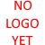

about:
> My name is Avery (she/her)
Welcome to my portfolio.
currently studying Applied Computer Science (with 10 years of coding experience)
> hope youll enjoy lookin around here for now （＾∀＾●）ﾉｼ
it must be noted that this is a temporary version of this site until i finish designing everything else!
Welcome to my portfolio.
currently studying Applied Computer Science (with 10 years of coding experience)
> hope youll enjoy lookin around here for now （＾∀＾●）ﾉｼ
it must be noted that this is a temporary version of this site until i finish designing everything else!
Projects:
[Notesu] - a w.i.p sticky note website started as a hobby project

[PasMan] - a password manager written in Python using the TKinter library.
[no current previews to show]
[Acto] - todo manager written in Python. [Archival project]
[no current previews to show]
not all of my projects are listed here.
feel free to visit my [github] to see further projects i am working on (｡･∀･)ﾉﾞ
feel free to visit my [github] to see further projects i am working on (｡･∀･)ﾉﾞ